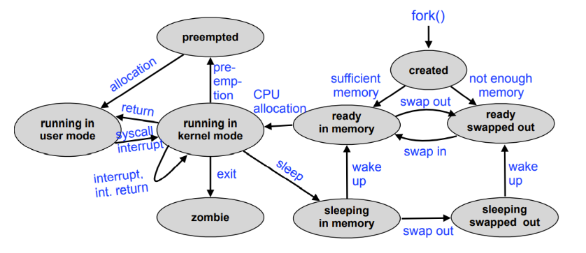

TDT4186 - Operating Systems
Operating systems know the hardware in detail and provides suitable abstractions, to serve the users and their application programs. Lectures can be found here
OS Development
The first system softwares were reusable probram libraries: linkers, loaders, debuggers and device drivers. The first operating systems were "resident monitors"; they handled interpretation of job control commands, loading and execution of programs and device control.
With multiprogramming, the CPU works on multiple jobs at the same time. In consequence, the OS must handle concurrent I/O activites, main memory for multiple programs, programs in execution (processes), processor scheduling and multi user operation (security and accounting).
Processes
A process is a program in execution. They often consist of alternating sequences of "CPU bursts" and "I/O bursts". The process context consists of
- Memory: code, data, and stack segment (text, data, bss, stack, heap)
- Contents on processor registers (Instruction pointer, Stack pointer, General purpose registers)
- Process state (RUNNING, READY, BLOCKED, etc.)
- User ID (and group ID)
- Access permissions
- Currently used resources (Files, I/O devices, etc.)
Scheduling enables the coordination of concurrent processes. Scheduling algorithms can be user oriented (short reaction times)or system oriented (optimal CPU utilization). Inter-process communication (IPC) enables the collaboration of multiple processes. Examples are shared memory and message passing.
From the point of view of the application, calling an operating system service looks like a regular function call, e.g.: pid = fork(); (the C library (libc) provides stubs (adapter functions) that call the actual syscall). However, arbitrarily calling code inside the OS kernel is dangerous. Many CPUs provide several execution modes: "user mode": only restricted functionality is allowed, and "kernel" or "supervisor mode": full access to all hardware resources.
| Syscall | Description | Manual section |
|---|---|---|
| getpid | returns PID of the calling process | (2) |
| getppid | returns PID of the parent process | (2) |
| getuid | return the UID of the calling process | (2) |
| fork | creates a new child process | (2) |
| exit | terminates the calling process | (3) |
| _exit | terminates the calling process | (2) |
| wait | waits for the termination of a child process | (2) |
| execve | loads and starts a program in the context of the calling process | (2) |
Read Unix manual pages with man <num> <command>
With pid_t fork(void), the child's PID is returned to the parent process, and 0 is returned to the child process. The child process continues the program from the current line and inherits most parent process attributes (copy on write), but not the Process ID (PID), and parent process ID (PPID). Copy on write is a an optimization which only really copies the memory if it is updated (written to).
void _exit(int) terminates the calling process and passes an integer argument as "exit status" to the parent process. It also releases the resources allocated by the process. In C, the library function exit() should be used, shich additionally releases resources used by the C library.
pid_t wait(int *) blocks the calling process until one of its child processes terminates, or returns immediately if all child processes are already terminated. The return value is the terminated child's PID. Using the int * parameter, the caller is passed the child's "exit status".
A terminated process is called a "zombie" until its exit status is requested using wait. The resources allocated to such processes can be released, but the OS project management still needs to know about them (i.e. exit status has to be saved).
If a parent process terminates before a child, the child process is orphaned. The init process (PID 1) adopts all orphaned processes.
int execve(const char *command, const char *args[], const char *encp[]) loads and starts the command passed in, remaining in the same process. Alternatives: execl, execv, execlp, execvp.
A more complete unix process state diagram: 
Traditional Unix process creation using fork is too heavyweight for some applications.
Threads and Fibers
Threads are lightweight (usually kernel-level) processes and can share address space (code + data + bss + heap). Advantages: Faster context switching, complex operations can run in parallel of user I/O. Disadvantages: error-prone, shared access requires coordination, scheduling overhead.
Fibers are also called user-level threads (or green threads, or featherweight processes). Implemented on application layer, unknown to the OS. Advantages: 1) Extremely fast context switch: only exchange processor registers. 2) No switch to kernel mode required to switch to different fiber 3) Every application can choose the fiber library best suited for it Disadvantages: 1) Blocking a single fiber leads to blocking the whole process (since the OS doesn't know about fibers). 2) No speed advantage from multiprocessor systems.
| Processes | Threads | Fibers | |
|---|---|---|---|
| Address space | separate | common | common |
| Kernel visibility | yes | yes | no |
| Scheduling | kernel level | kernel level | user space |
| Stack | separate per process | separate per thread | can be common |
| Switching overhead | very high | high | low |
Windows processes provide environment and address space for threads. Every thread has its own stack and CPU register set. User level threads (fibers) are possible, but unusual. Strategy: keep the number of threads low; Use overlapping (asynchronous) I/O.
Linux implements POSIX threads using the pthreads library. All threads and processes are internally managed as tasks, which the scheduler does not differentiate between.
Synchronization
A race condition is a situation in which multiple processes access shared data concurrently and at least one of the processes manipulates the data. To avoid race conditions, concurrent processes need to be synchronized (coordinated).
Only a single process can be in a critical section at the same time. Solved by mutual exclusion, using the mutex (lock) abstraction. However, deadlocks must be considered.
The bakery algorithm is a working solution for the problem of critical sections. Another idea to ensure that a process stays in the critical section is to suppress interrupts (because they cause context switches). Many CPUs support indivisible (atomic) read/modify/write cycles that can be used to implement lock algorithms.
Semaphores are an operating system abstraction to exchange synchronization signals between concurrent processes. A semaphore is defined as a non-negative integer with two atomic operations: wait (decrement) and signal (increment).
A monitor is an abstract data type with implicit synchronization properties. They are for example implemented in Java.
An actively waiting process 1) is unable to change the condition it is waiting for on its own 2) unnecessarily impedes other processes which would be able to use the CPU for "useful" work. 3) harms itself: the longer a process holds the processor, the longer it has to wait for other processes to fulfill the condition it is waiting for.
In the case of passive waiting, the process is entered into a waiting queue and is not unblocked until the event occurs.
Deadlocks
A deadlock is a situation in which two or more processes are unable to process because each is waiting for one of the others to do something. A deadlock involves passive waiting, with a BLOCKED process state. The livelock alternative involves active waiting and an arbitrary process state. Deadlocks are the "lesser evil".
Necessary conditions for a deadlock:
- Exclusive allocation of resources ("mutual exclusion")
- Allocation of additional resources ("hold and wait")
- No removing of resources ("no preemption")
- A closed chain of processes exists, such that each process holds at least one resource needed by the next process in the chain ("circular wait")
Resources are administered by the operating system and provided to the processes. Resource allocation graphs are used to visualize and also automatically detect deadlock situations. They describe the current system state; The nodes are processes and resources, the edges show an allocation or a request.
Reusable resources are allocated by processes for a certain time and released again afterwards (CPU, main and mass storage, I/O devices, system data structures such as files, process table entries, etc.). A deadlock occurs if two processes each have allocated a reusable resource which is afterwards additionally requested by the respective other process. Access is typically synchronized with mutual exclusion.
Consumable resources are generated (produced) and destroyed (consumed) while the system is running (Interrupt requests, signals, messages, data from input devices, etc.). A deadlock occurs if two processes each wait for a consumable resource which is produced by the respective other process. Access is typically synchronized with one-sided synchronization.
Indirect methods for preventing deadlocks are 1) use non blocking approaches 2) only allow atomic resource allocations 3) enable the preemption of resources using virtualization. Direct methods prevent circular waiting with continuous requirements analysis and avoidance of "unsafe states".
Banker's algorithm is a deadlock avoidance algorithm which finds a process sequence that guarantees that the system does not run out of resources even when all processes completely use their "credit limit".
Deadlocks can be accepted ("ostrich algorithm") or detected by creating a waiting graph and search for cycles (O(n)). In the recovery phase, deadlocked processes are terminated and resources are preempted. Methods to avoid/detect deadlocks are very difficult to implement, require too much overhead and are thus not useable. Prevention methods more commonly used and relevant in practice. The risk of deadlock can also be solved by virtualizing resources.
Inter-process communication (IPC)
Inter-Process Communication (IPC) can involve 1) multiple processes cooperate on a task 2) simultaneous use of information by multiple processes 3) reduction of processing time due to parallelization 4) hiding of processing times due to "background execution".
Processes can communicate by exchanging messages, or by using shared memory (exchange of data by concurrent writes into and reads out of a common memory area).
Message-oriented communication can be synchronous (Receiver blocks until the message has arrived, Sender blocks until the reception of the message is confirmed) or asynchronous (Sender hands the message to the OS and continues running. Requires buffering.).
Message addressing can be direct (using process ID, or port/socket) or indirect (using channels (pipes), mailboxes, message queues). Group addressing is another dimension, a message is either unicast (sent to exactly one recipient), multicast (sent to a selection of possible recipients), or broadcast (sent to all).
Unix signals are interrupts implemented in software, and are a minimal form of IPC as only the signal number is transmitted. Examples: SIGINT: Terminate the process (ctrl-C), SIGSTOP: Suspend process (Ctrl-Z), SIGWINCH: Window size has changes, SIGCHLD: Child process terminated, SIGSEGV: Memory protection violation, SIGKILL: Process is killed.
Unix shells (a "shell" around the operating system "core") are text based user interface to start commands (Unix programs). Every executed command is a separate child process.
Standard I/O channels (stdin, stdout, stderr) are usually connected to the terminal in which the shell runs that started the process. The numerical file descriptors assigned to these channels are 0 to stdin, 1 to stdout and 2 to stderr. redirects standard output, < redirects standard input and | (pipe) symbol tells the shell to connect the standard output of the left process to the standard input of the right process.
Unix pipes are channel between to communicating processes with the following properties: unidirectional, buffers (fixed buffer size), reliable transport, stream-oriented.
Doug Mcllroy, the inventor of Unix pipes, described the Unix philosophy. It can be summarized as "Do one thing, do it well."
Sockets are general (bidirectional and buffered) communication endpoints in a computer network. They are described by a domain (protocol family), a type and a protocol. Unix domain sockets work like bidirectional pipes and can be created as special file in the file system. Internet domain sockets are used for inter-computer communication using Internet protocols.
Remote procedure calls (RPC) work like a function call between different processes. A request message includes request to execute the remote function and the related parameters. A response message includes the result(s) of the remote call.
Uniprocessor scheduling
Depending on the scheduling level, every process is assigned a logical state representing its dispatch state at a given point in time: 1) short-term scheduling (µs-ms) (ready, running, blocked), 2) medium-term scheduling (ms-min) (swapped and ready, swapped and blocked), 3) long-term scheduling (min – hours) (created, terminated).
A dispatcher performs various tasks, including context switching, setting up user registers and memory mapping. These are necessary for the process to execute and transfer CPU control to that process. When dispatching, the process changes from the ready state to the running state. The scheduler selects the process, the dispatcher takes the selected process to running state.
In preemptive scheduling, a process can be forced to yield (release) the CPU. In non-preemptive scheduling, all processes run to completion.
| Scheduling approach | Description | Preemptive |
|---|---|---|
| First-Come First-Served (FCFS) | Queueing criterion is the arrival time of a process | No |
| Round Robin (RR) | The available processor time is split into time slices | Yes |
| Virtual Round Robin (VRR) | Processes can use the remaining run time they did not use in their previous time slice | Yes |
| Shortest process next (SPN) | Requires knowledge about the process run times | No |
| Shortest Remaining Time First (SRTF) | Extends SPN with preemption | Yes |
| Highest Response Ratio Next – HRRN | Extends SRTF, considers the aging of processes | Yes |
| Feedback (FB) | Short processes obtain an advantage without having to estimate the relative lengths of processes | Yes |
Multi-level scheduling combined multiple scheduling strategies.
When evaluating scheduling algorithms, a number of objectives may be optimized for. User oriented: 1) Run time (time between start and termination of a process including the waiting time(s)), 2) Response time (time between user input and program response), 3) Tardiness (deadlines, real-time systems), 4) Predictability (processes are always processed identically independent of the load). System oriented: 1) Throughput (finish as many processes as possible per time unit), 2) CPU load (keep the CPU busy at all times), 3) Avoid overhead (scheduling decisions, context switches) 4) Fairness (no process should be disadavantaged (e.g. by starvation)) 5) Load balancing (I/O devices should also be utilized uniformly).
Memory management
Access to I/O devices is often slow ("memory gap", "I/O bottleneck"). Polling sends a command and then waits until the device returns data. With interrupts, the device notifies the program when data is ready.
Caches work efficiently due to two locality principles:
- Temporal locality: a program accessing some part of memory is likely to access the same memory soon thereafter
- Spatial locality: a program accessing some part of memory is likely to access nearby memory next
The MMU translates allowed ("virtual", "logical") addresses to "physical" addresses in main memory using a translation table. Enables security by separating process address spaces. The MMU uses a special cache on the CPU - the translation lookaside buffer (TLB).
With static memory allocation, fixed memory areas are allocated to the OS and user processes. Disadvantages: 1) Limited degree of multiprogramming. 2) Limitation of other resources e.g. I/O bandwidth due to buffers that are too small. 3) Unused OS memory cannot be used by application processes (and vice versa). Dynamic memory allocation solves the problems of static memory allocation, but requires placement and replacement strategies.
Free segments of main memory have to be represented. The bit list approach is simple, but have some disadvantages: 1) Bit lists can require lots of memory 2) When releasing memory, the size of the memory block to be released has to be known or provided 3) Linear search is slow. The linked list approach uses less (but dynamic!) memory and is faster. But it requires a minimum gap size, to store the length and the pointer to the next free gap.
Placement strategies decide where to allocate memory. Some trivial placement strategies are First fit, Rotating First Fit / Next Fit, Best Fit, Worst Fit (best and worse are sorted after gap size). The buddy allocation method splits memory dynamically into areas of a size 2^n.
External fragmentation involves memory fragments outside of the allocated memory areas which cannot be used. This is a problem with all list based strategies, e.g. first fit, best fit. Internal fragmentation involves unused memory inside of allocated memory areas. This is a problem e.g. with the buddy allocator.
The Linux kernel uses buddy allocation. Inside processes, heap memory enables dynamic allocation of memory with the malloc and free functions. Secondary storage sections are ofte managed using bitmaps.
With multiprogramming, segments of a process may be swapped out to background memory and released in main memory, if the space is needed by another process. Swapping is slow.
With segmentation, a process is divided into variable-length segments. Segment details (Base, Limit (length)) are stored in the segmentation tagle. Segmentation cause fragmentation problems. Compaction reduces fragmentation, but is an operation with large overhead.
With paging, a process is divided into fixed-length pages, solving the external fragmentation problem. However, page-based addressing creates internal fragmentation (the last page is often not used completely). Small pages reduce internal fragmentation, but increase the size of the page table (and vice versa). The page table maps logical base addresses (location) to physical base addresses (content).
With multi-level paging, the table must not contain the whole address space. Subtables can be created at access time (on demand), which saves memory.
The translation lookaside buffer (TLB) provides fast access to page address mapping. TLB has to be flushed when the OS switches context. If a page not contained in the TLB is accessed, the related access information is entered into the TLB and an old TLB entry has to be discarded.
For large logical address spaces (e.g. 64 bit addresses), inverted page tables may be used. In an inverted page table, the logical address (along with process PID) is the content of the table, and the physical base address is represented by the location.
With virtual memory, the illusion of a large (or "endless") main memory is created, by only keeping the currently used memory areas available in main memory. With demand paging, pages are loaded into main memory on demand. The new page may replace another page, which is to be decided by a replacement strategy. The performance of paging depends on the probability of page faults:
| Replacement Strategy | Description |
|---|---|
| First-In First-Out (FIFO) | Replace the page that was placed first. |
| Least Recently Used (LRU) | Replace the least recently used page. Requires control states (backwards distance) |
| Second Chance (clock) | A reference bit is set when the page is accessed. Pages are checked in FIFO order, ref: 1 -> 0, 0 -> replace. Possible to extend with a modification bit. |
| Optimal (OPT) | Replace the page that will be accessed farthest in the future. |
With a free page buffer, a number of free pages is always kept in memory. Pageouts take place "in advance".
Thrashing happens when a page that was paged out is accessed immidiately after the page out happened. The process spends more time waiting to handle page faults than with its own execution. Causes of thrashing are 1) A process is close to its page maximum, 2) Too many processes in the system at the same time, 3) Suboptimal replacement strategy. Solutions to thrashing are 1) swapping of processes, 2) working set model.
Input and Output
Character devices (such as a keyboards, printers, modems, and mice) provide a sequential stream of information. Block devices (such as disks, CD-ROM, DVD, tape drives) provide blockwise random access. Some other devices which don't fit this scheme easily are (GP)GPUs, network cards and timers.
Depending on the device, I/O can be performed via polling ("programmed I/O"), interrupts or DMA. Polling implies active waiting for an I/O device. Interrupts signal the software to become active, and are the source for asynchronous behavior. It implies that the CPU can be allocated to another process while waiting for a response from the device. Direct Memory Access (DMA) is used by complex controllers to transfer data from and to main memory independent of the CPU. DMA bypasses both the cache and MMU memory protection (application processes can never have direct access to program the DMA controller).
In Unix, peripheral devices are realized as special files. Devices are uniquely identified by a tuple: device type (block or character device), major device number (selects one specific device driver), and minor device number (selects one of multiple devices controlled by the device driver identified by the major number)
| Unix access primitives | Description |
|---|---|
int open(const char *devname, int flags) |
"opens" a device and returns a file descriptor |
off_t lseek(int fd, off_t offset, int whence) |
Positions the read/write pointer (relative to the start of the file) – only for random access files |
ssize_t read(int fd, void *buf, size_t count) |
Reads at most count bytes from descriptor fd into buffer buf |
ssize_t write(int fd, const void *buf, size_t count) |
Writes count bytes from buffer buf to file with descriptor fd |
int close(int fd) |
"closes" a device. The file descriptor fd can no longer be used after close |
Buffering enables the processes and devices to operate asynchroniously. Without data buffers 1) data which arrives before a corresponding read operation is executed (e.g. keyboard input) would be discarded. 2) if an output device is busy, write would either fail or block the process until the device is ready again. 3) a process executing an I/O operation cannot be swapped.
With a single I/O buffer 1) The OS can accept data even if the reader process has not executed read yet 2) For block devices, a subsequent block can already be prefetched 3) he process can now be swapped, DMA writes to a buffer. 4) when writing, data is copied, the caller does not block. Data buffers in the user address space can immediately be reused.
With a double I/O buffer 1) While data is transferred from the I/O device to one of the buffers, the contents of the other buffer can be copied into the user address space. 2) While data is transferred from one of the buffers to the I/O device, the contents of the other buffer can already be refilled with data from the process address space.
I/O ring buffers are commonly used. Multiple data blocks can be buffered, even if the reading process does not call read fast enough. A writer process can execute multiple write calls without being blocked.
I/O drivers usually queue multiple requests. Scheduling algorithms determine the order in which the requests will be handled. Some scheduling algorithms (used in mechanical disks) are First-In-First-Out (FIFO), Shortest Seek Time First (SSTF), and Elevator.
File Systems
Unix principle: "everything is a file". More precisely: 1) Every resource in the system can be accessed using a name mapped into a directory hierarchy. 2) Access to resources uses standard Unix system calls for file access. 3) File permissions are used to control access to the resource.
Files are identified by per process file descriptors (positive integer number) in the OS.
| Unix file access API (+ virtual file system mounting) | Description |
|---|---|
int open(const char *path, int oflag, ...) |
Attempts to open the file with the given path name and options for accessing (read only, read/write etc.). Returns a file descriptor fd refering to the file on success. |
ssize_t read(int fd, void *buf, size_t nbyte) |
Read nbyte bytes from file fd into the memory starting at user space memory address buf. |
ssize_t write(int fd, const void *buf, size_t nbyte) |
Write nbyte bytes to file fd from the memory starting at user space memory address buf. |
int close(int fd) |
Closes the file: flushes buffers and invalidates file descriptor. |
int mount(const char *source, const char *target, const char *filesystemtype, unsigned long mountflags, const void *data) |
Attaches ("mounts") a file system to the given directory in the global directory tree System Call. |
int umount(const char *target) |
Removes the attachment. Note: umount, not unmount |
In most cases, files require multiple blocks of storage on disk. We simply view a disk as a large array of blocks.
With contigous storage, a file is stored in blocks with increasing block number. Advantages: 1) Access to all blocks with minimal delay due to disk arm positioning 2) Fast direct access to a given file offset position 3) Used for read-only file systems, e.g. CD-ROM/DVD. Disadvantages (problems): 1) Finding free space on the disk 2) Fragmentation 3) The size of new files is usually not known in advance.
With linked list storage, blocks of a file are linked and files can be extended and shrunk. Disadvantages are 1) Pointers take up storage space, 2) Error prone (file cannot be completely restored if the pointer information contains errors), 3) Direct access to arbitrary file positions is difficult, 4) Requires frequent positioning of the disk head.
Linked list storage with file allocation table (FAT) involves storing links iin separate disk blocks. Advantages: 1) Complete content of data block is usable, 2) Redundant storage of the FAT is possible (useful in case of an error). Disadvantages: 1) Additional loading of at least one block required, 2) Unused information is loaded (FAT contains links for all files), 3) Search overhead (for the data block containing information at a given offset inside a file), 4) Frequent positioning (of the disk head when data blocks are scattered over the disk)
With indexed storage, a special disk block contains block numbers of the data blocks of a file. A problem is that a fixed number of blocks that can be referenced in the index block. This results in fragmentation for small files and extensions required for large files.
With Unix inodes, storage is indexed with multiple levels. This enables the addressing of large files and fragmentation is not a problem for small files.
Tree sequential storage (e.g. B+-tree) is used in databases to efficiently find records using a search key.
Free space management is similar to free main memory management.
System crashes and defective disks are reliability challenges. The use of backups is a solution, but requires time and storage space overhead. Checksums is another, which also requires storage space overhead. Additionally, repair tools such as scandisk or fsck are able to repair (some) inconsistent metadata. However, there is a possible loss of data in the repair process, and long runtimes of the repair programs for large disks.
Intelligent block device (drivers) handle reliability problems below the file system layer. Advantage: all file system implementations can benefit.
The Unix Block Buffer Cache buffers disk blocks in main memory and uses algorithms similar to page frame handling. This enables read ahead, lazy write and free block management.
Redundant Arrays of Inexpensive Disks (RAID) saves costs by creating large logical disks out of inexpensive smaller disks. Additional features are 1) better utilization of the available data bandwidth by using parallel transfers, 2) ault tolerance using redundancy.
| RAID Level | Idea | Effect | Disadvantage |
|---|---|---|---|
| 0, Disk striping | Data of a large logical disk are stored in a round robin way distributed over N physical disks | Increased bandwidth, since multiple disks are accessed in parallel | Failure probability is multiplied by N |
| 1, Disk mirroring | Data is stored redundantly on two disks at the same time | Increased read bandwidth, somewhat lower write bandwidth, higher reliability by having a copy of the data | Uses twice the disk space |
| 4, Additional parity disk | Data is striped over multiple disks, one disk stores the related parity | Errors (of a single disk) can be detected and fixed without a large storage overhead. Fast read operations | Parity disk is bottleneck when writing |
| 5 and 6, Distributed parity data | Distribute the parity block over all disks | Additional write overhead to update the parity block when writing is distributed | All data is protected with high overhead, even though a part of the data may be not critical |
| x+y, Hierarchies | Combine different RAID mechanisms in a hierarchy, e.g. RAID 1+0 (= RAID 10) | Properties can be combined | Requires a large number of disks |
In addition to writing data and metadata (e.g. inodes), journaled file systems write a protocol of the changes. At boot time, the protocol file is compared to the latest changes, this avoids inconsistencies. The log file can also be used for recovery purposes (UNDO/REDO). Advantages: 1) a transaction is either committed (completed) in whole or not at all, 2) users can define transactions that span multiple file accesses, if these are also recorded in the log, 3) impossible to create inconsistent metadata, 4) booting a crashed system only requires a fast log file check. Disadvantages: 1) less efficient, since additional log file has to be written (thus usually only metadata journaling, no full journaling).
With Log-structured file systems (LFS), blocks are not overwritten, but only appended to the log. Changes are added in batches to the front, obsolete data fall out at the end. The disk bandwidth is utilized to a high degree when writing, but performance is reduced significantly if free memory is low.
Copy-on-Write file systems (CoW) takes the idea from LFS, but is more flexible when allocation free areas.
Operating system architectures
Software architecture is defined as the basic organization of a system, expressed through its components, their relations to each other and the environment as well as the principles which define the design and evolution of the system Source.
A library OS is one in which the services are provided in the form of libraries and composed with the application and configuration code to construct a unikernel: a specialized, single address space Source.
A monolithic kernel is an operating system architecture where the entire operating system is working in kernel space Source.
A microkernel is the near-minimum amount of software that can provide the mechanisms needed to implement an OS Source. First-generation microkernels had problems with high overhead of system calls and IPC operations, and sub-optimal decisions about which components should be implemented in the microkernel. The objective of second-generation microkernels was to remove disadvantages of first generation microkernels. "A concept is tolerated inside of a microkernel only if moving it outside of the kernel would prevent the implementation of functionality required in the system" (Jochen Liedtke: L4 (1996)).
The idea behind exokernels is to force as few abstractions as possible on application developers, enabling them to make as many decisions as possible about hardware abstractions. Exokernels are tiny, since functionality is limited to ensuring protection and multiplexing of resources Source.
A virtual machine monitor (VMM) or hypervisor is the software component that provides the virtual machine abstraction. Hypercalls are explicit calls to the hypervisor. The objective of virtualization is isolation and multiplexing of resources below the operating system layer, and to enable simultaneous use of multiple guest operating systems.
Paravirtualization is a virtualization technique that presents a software interface to the virtual machines which is similar, yet not identical, to the underlying hardware–software interface. The intent of the modified interface is to reduce the portion of the guest's execution time spent performing operations which are substantially more difficult to run in a virtual environment compared to a non-virtualized environment Source.
| Property | Library OS | Monolithic systems | Microkernel systems | Virtualization |
|---|---|---|---|---|
| Isolation | Ideal – single tasking system – but high time overhead to switch tasks | No isolation of components in kernel mode, only between application processes | Very good – separate address spaces for all components | Very good – but coarse granularity (between VMs) |
| Interaction | Direct (function calls) | Direct function calls (in the kernel), Traps (application – kernel) | Synchronous IPC | Communication between VMs only via TCP/IP (virtual network cards!) |
| Interrupts | Sometimes interrupts were not in use → polling | Direct handling of hardware interrupts by IRQ handlers | The microkernel translates interrupts into IPC messages | Forwarding of IRQs to guest kernel inside of the VM (simulated hardware interrupts) |
| Adaptability | Separate libraries for each hardware architecture, no standards | Changes in one component influence other components | Originally hard to adapt – x86 assembler code, today in C/C++ | Specific adaptation for a CPU type required, paravirtualization has a lot of overhead |
| Extensibility | Depends on the library structure: global structures, "spaghetti code" | Originally: recompilation required; today: kernel module system | Very good and simple as components in user mode | Difficult – not commonly available in VMMs |
| Robustness | Direct control of all hardware: errors → system halt | Bad – an error in one component "kills" the complete system | Good – but dependent on the robustness of user mode components | Good – but coarse granularity (whole VMs affected by crashes) |
| Performance | Very high due to direct operations on the hardware without privilege mechanisms | High – few copy operations required, since all kernel components use the same address space. System calls require a trap, however | In general depending on the IPC performance | Good – 5-10% lower compared to direct execution on the same hardware |
Cloud operating systems
Some cloud service models are Software-as-a-Service (SaaS), Platform-as-a-Service (PaaS), and Infrastructure-as-a-Service (IaaS).
Cloud-Computing challenges are 1) Data protection and privacy, 2) Vendor lock-in, 3) Quality of service.
| Private cloud | Community cloud | Public cloud | Hybrid cloud | |
|---|---|---|---|---|
| Scalability | restricted | restricted | very high | very high |
| Security | most secure | very secure | moderately secure | very secure |
| Performance | very good | very good | low to medium | good |
| Reliability | very high | very high | medium | medium to high |
| Costs | high | medium | low | medium |
With container-based virtualization, the OS kernel is virtualized and the containers share a kernel.
With hardware virtualization, a complete computer (CPU, memory, I/O devices) is virtualized.
Security
Safety is protection against risks due to hardware and software errors or failures. Security is protection of users and computers against intended errors (attacks).
Someone (differentiation of persons and groups) has to be deterred from doing (using technical and organizational methods) some unexpected things! 1) unauthorized reading of data (secrecy, confidentiality), 2) unauthorized writing of data (integrity), 3) working under a "false flag" (authenticity), 4) unauthorized use of resources (availability).
Example: login spoofing. A fake login screen may be used to access the user credentials. Solution: require the user to start the login sequence using a key combination that cannot be intercepted by a user program.
Example: virus. Program code inserted into another program, start of the infected program results in virus reproduction. Sorts of viruses: 1) Boot sector virus: executed at system startup time. 2) Macro virus: in scriptable programs, e.g. Word, Excel (Reproduced through documents e.g. sent by email)! 3) Executable program as virus.
Example: social engineering. Gain access to information by exploiting human errors. Phishing is to obtain data of an internet user by pretending to be someone else (with forged addresses). Pharming is manipulation of DNS requests by web browsers, redirecting accesses, e.g. to forged bank websites.
Some real malware examples are the Unix Morris worm, the Michelangelo virus, the Sony BMG root kit and the Blue Pill.
| Malware | Description |
|---|---|
| Viruses | programs inadvertently distributed by a user |
| Worms | do not wait for user actions to propagate to another computer |
| Trojan horses | program disguised as useful application |
| Root kit | collection of software tools to disguise future logins of an attacker and hide processes and files, installed after a computer system is compromised |
Design principes of permission management are 1) Principle of least privilege (Allow a person or software component only those permissions that are required for the functionality to be realized) 2) Fail-safe defaults 3) Separation of duties.
An access matrix consists of Subjects (persons/users, processes, Objects (data, devices, processes, memory) and Operations (read, write, delete, execute). It is used to determine if operation(subject, object) is permitted.
Some access matrix variants are 1) Access Control Lists (ACL / Coloumns): permissions are validated based on the identity of the requesting subject (user). 2) Capabilities (Rows): for every access to an object a property is validated which is owned by the subject and which can be passed to other subjects on demand. 3) Mandatory access control (Rule-based): rules are evaluated for every access.
Unix uses simple Access Control Lists (ACL). Processes have a user ID and a group ID, files have an owner and a group. Permissions are related to the user (owner), group, and all others.
The Memory Management Unit (MMU) provides hardware-based protection by 1) only mapping the exact set of required main memory pages into the virtual address space of a process, 2) isolation of the physical address spaces of different processes, 3) protection bits for each page, controlled at every access.
Protection rings is a privilege concept where all code is executed in the context of a given ring, where the innermost ring (0) has access to all system resources. User programs usually run in ring 3.
Software bugs such as exceeding a value range or a heap/buffer overflow are security issues, and can be exploited.